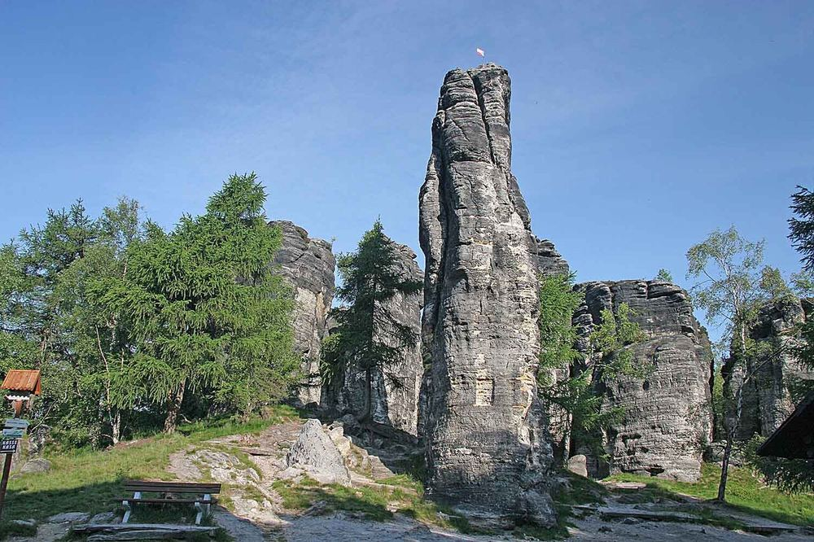

Tiské stěny rock labyrinth
4.9/5 Google · 5,957 reviews- Hours
- Daily in July–August, timed-entry tickets with a daily visitor cap (since 2025). Buy online.
- Family price
- Family ticket ≈ 250 CZK (≈ €10); under-6 free. Parking ≈ 100 CZK. EST
- Time
- 1.5–2 h
Sandstone 'rock town' maze of short, easy paths and small climbs. A great first walk after the flight.